Què és un entorn integrat de desenvolupament?
És una aplicació que integra en un mateix entorn diverses eines per crear, editar, comprovar, executar i depurar programes.
Sense un IDE, podem escriure el codi amb un editor i utilitzar el terminal per compilar-lo i executar-lo. Un IDE agrupa moltes d'aquestes operacions i facilita el treball amb projectes que contenen diversos fitxers.
Editor de codi
Permet escriure i modificar el codi, amb colors de sintaxi, autocompletat, cerca i ajuda contextual.
Compilació i execució
Permet compilar el programa, iniciar-lo i consultar els missatges que genera.
Detecció d'errors
Mostra errors i avisos que poden ajudar a localitzar problemes abans o durant l'execució.
Depurador
Permet aturar el programa en punts concrets, avançar pas a pas i observar els valors de les variables.
Gestió del projecte
Organitza fitxers, paquets, biblioteques i configuracions d'execució.
Extensions i automatització
Pot incorporar eines addicionals i automatitzar tasques repetitives.
Incidencia.java de la PRAC_01. No començarem una aplicació nova.Entorn de treball i workspace
A classe treballarem amb Eclipse IDE for Java Developers · 2025-06 (4.36.0). Als ordinadors del centre, Eclipse ja està instal·lat i preparat per començar les pràctiques; per tant, no cal seguir un procés d'instal·lació en aquesta teoria.
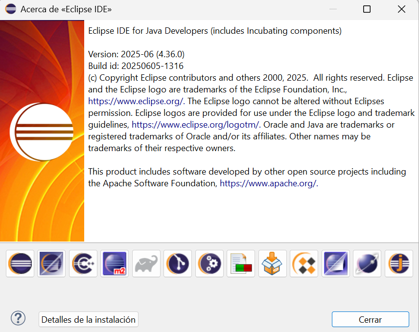
Espai de treball
És la carpeta que Eclipse utilitza per organitzar els projectes i desar preferències de l'entorn. Un workspace pot contenir diversos projectes.
Aplicació concreta
Cada projecte té els seus fitxers i la seva configuració. En les captures de l'exemple, ProjecteJava1 i gestorIncidencies són dos projectes independents.
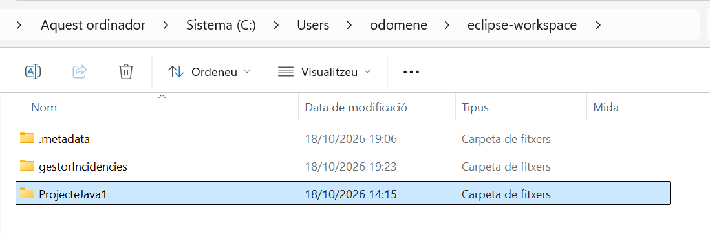
Projecte Java i projecte Maven
Eclipse permet crear projectes Java de manera directa o treballar amb Maven. Un projecte Java d'Eclipse és l'opció més senzilla per començar; Maven és una eina de construcció que afegeix una estructura estàndard i gestiona dependències mitjançant el fitxer pom.xml.
Per començar
- Configuració senzilla dins d'Eclipse.
- Codi font habitualment a
src. - Fitxers compilats a
bin, segons la configuració. - Les biblioteques externes s'afegeixen manualment si cal.
Per gestionar projectes
- Configuració central a
pom.xml. - Estructura estàndard per al codi i les proves.
- Gestió de dependències.
- Automatització de compilació, proves i empaquetament.
Exemple 1. Crear un projecte Java
Començarem amb un projecte Java senzill per practicar l'ús de l'IDE sense afegir encara la configuració de Maven.
- Obre Archivo → Nuevo → Proyecto Java (o File → New → Java Project, segons l'idioma).
- A Project name, escriu
ProjecteJava1. - Deixa la ubicació predeterminada del workspace si és correcta.
- Selecciona l'entorn Java acordat a classe, per exemple
JavaSE-21si està configurat. - Mantén l'estructura de carpetes de codi i sortida proposada per Eclipse.
- Per a aquests primers exercicis, deixa desmarcada l'opció de crear
module-info.java. - Prem Finish.
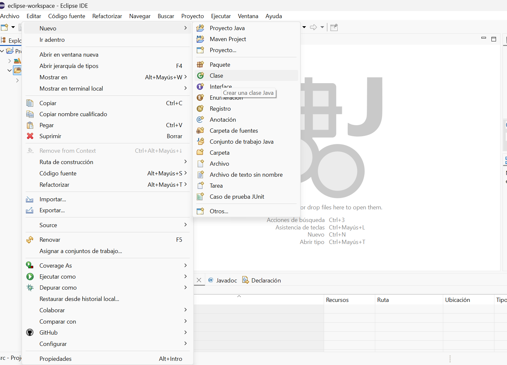
Camí de construcció (Build Path)
Eclipse utilitza el Build Path per saber on trobar el codi font, les biblioteques i les classes necessàries per compilar el projecte.
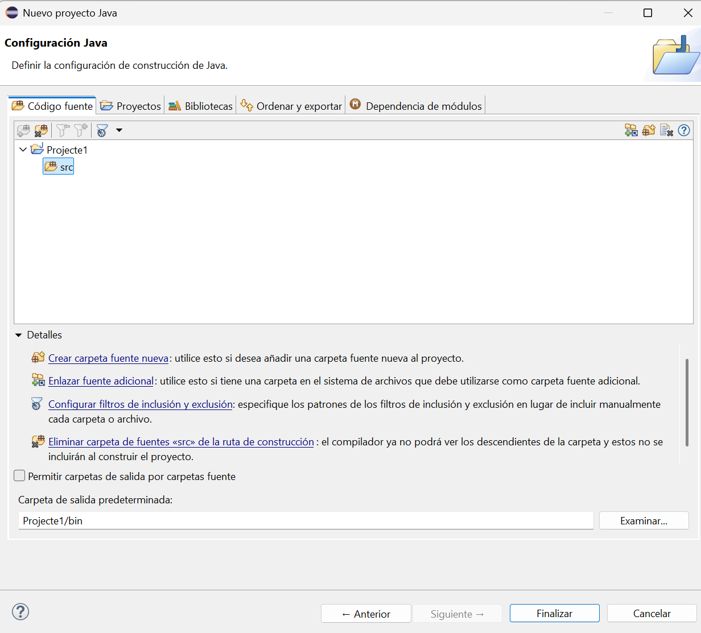
src per al codi font i bin com a carpeta de sortida, si són els valors proposats.| Element | Funció |
|---|---|
src | Conté els fitxers de codi font, com ara Principal.java. |
bin | Pot contenir els fitxers compilats .class. |
| JRE System Library | Biblioteques i entorn Java seleccionat per al projecte. |
module-info.java | Descriu un mòdul Java. No el necessitem en aquests primers exercicis. |
Crear i executar la classe principal
- Fes clic amb el botó dret sobre
srci tria Nuevo → Clase. - Escriu
Principalcom a nom de classe. - Marca l'opció per generar
public static void main(String[] args). - Prem Finish i escriu un missatge senzill.
- Fes clic dret sobre la classe i selecciona Run As → Java Application.
public class Principal {
public static void main(String[] args) {
System.out.println("Hola, món!");
}
}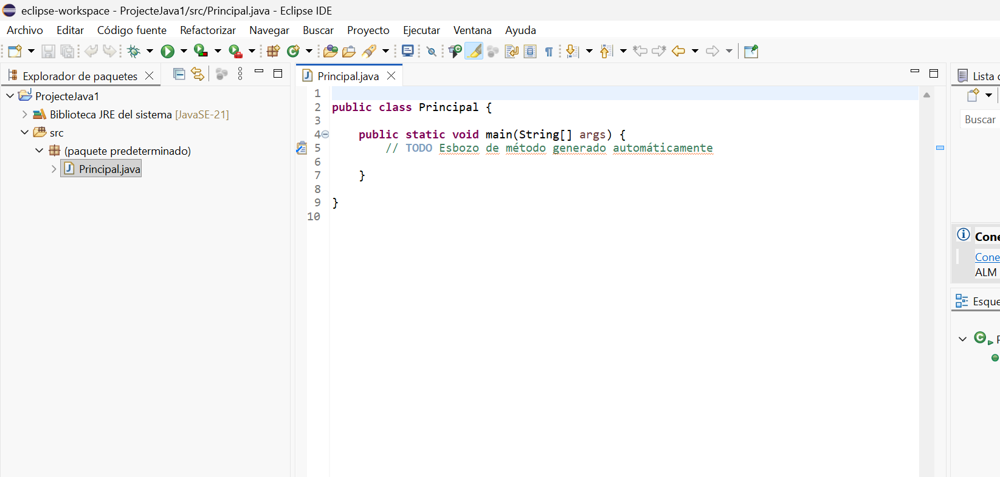
module-info.java, Java exigeix que les classes d'un mòdul amb nom estiguin dins d'un paquet amb nom. Per evitar aquest concepte addicional al principi, no crearem el fitxer de mòdul en aquest exemple.Exemple 2. Crear un projecte Maven
Ara crearem un projecte Maven independent per al mateix context del Gestor d'incidències del centre educatiu. Això permet comparar la configuració del projecte Java amb la de Maven.
- Obre Archivo → Nuevo → Otro… → Maven → Maven Project. És preferible iniciar-lo des del menú superior per crear un projecte nou.
- A la primera pantalla, marca Create a simple project (skip archetype selection). Així ometem la selecció d'una plantilla (arquetip).
- Deixa desmarcada Add project(s) to working set, perquè no necessitem agrupar projectes per a aquest exemple.
- Marca Use default Workspace location si la ubicació que mostra Eclipse és la carpeta arrel correcta del workspace. Si no ho és, desmarca-la i selecciona la carpeta arrel amb Browse…; no triïs
srcni un fitxer Java. - Prem Next i omple els camps de l'artefacte.
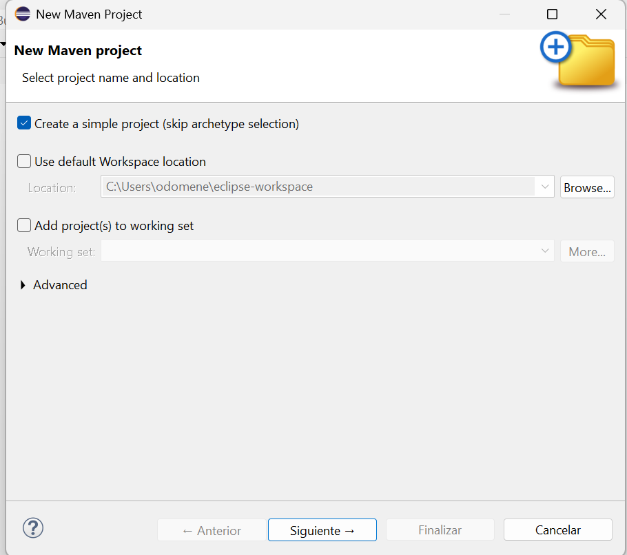
Dades de l'artefacte
Per al projecte de l'institut, utilitzarem el domini thosicodina.cat invertit com a convenció per al grup:
| Camp | Valor de l'exemple | Què identifica? |
|---|---|---|
| Group Id | cat.thosicodina | El grup o l'organització a què pertany el projecte. Es fa servir sovint el domini invertit. |
| Artifact Id | gestorIncidencies | El projecte concret dins del grup; forma part del nom de l'artefacte generat. |
| Version | 0.0.1-SNAPSHOT | La versió. SNAPSHOT indica que és una versió en desenvolupament. |
| Packaging | jar | El tipus de paquet que es generarà. |
| Name | Gestor incidencies | Nom descriptiu del projecte. |
| Description | Gestor d'incidencies | Descripció breu del projecte. |
Deixa buits els camps de Parent Project, perquè estem creant un projecte independent, no un mòdul fill d'un altre projecte Maven. Després prem Finish.
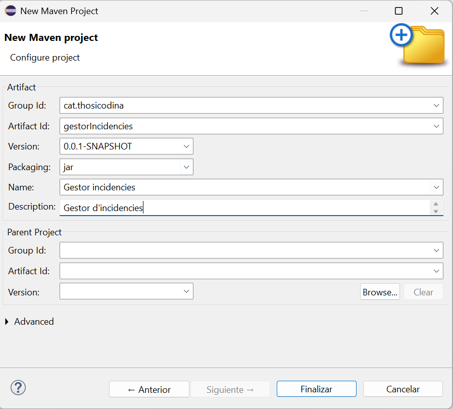
Group Id i Artifact Id identifiquen el projecte de manera conjunta amb la versió.Reconèixer l'estructura Maven
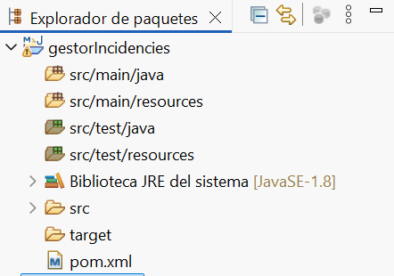
src/main/java: codi font principal de l'aplicació.src/main/resources: recursos que necessita l'aplicació.src/test/java: codi de les proves automatitzades.src/test/resources: recursos de les proves.pom.xml: configuració de Maven, identificació del projecte i dependències.target: carpeta de sortida que Maven genera durant la construcció.
Què conté el fitxer pom.xml?
És el fitxer central de configuració de Maven. L'assistent hi desa les dades del projecte; més endavant hi podrem declarar dependències i altres opcions de construcció.
<project xmlns="http://maven.apache.org/POM/4.0.0"
xmlns:xsi="http://www.w3.org/2001/XMLSchema-instance"
xsi:schemaLocation="http://maven.apache.org/POM/4.0.0
https://maven.apache.org/xsd/maven-4.0.0.xsd">
<modelVersion>4.0.0</modelVersion>
<groupId>cat.thosicodina</groupId>
<artifactId>gestorIncidencies</artifactId>
<version>0.0.1-SNAPSHOT</version>
<name>Gestor incidencies</name>
<description>Gestor d'incidencies</description>
</project>Group Id identifica el grup o l'organització; Artifact Id identifica el projecte concret; Version indica la versió. Maven combina aquestes dades per identificar els artefactes i gestionar dependències.
La captura de l'estructura mostra JavaSE-1.8. És la configuració que tenia aquest projecte en crear-lo; no és una exigència de Maven. Per a les pràctiques, comprova que el projecte utilitza la versió de Java acordada a classe (per exemple, Java 21 si està configurada a Eclipse).
Quines tasques pot automatitzar Maven?
mvn compile
Compila el codi principal del projecte.
mvn test
Executa les proves configurades, si n'hi ha.
mvn package
Empaqueta el projecte en el format configurat, per exemple un JAR.
Dependències
Gestiona les biblioteques declarades al fitxer pom.xml.
Quan triem cada opció?
| Situació | Opció recomanada | Per què? |
|---|---|---|
| Primers exercicis de Java | Projecte Java | Menys configuració i menys conceptes nous. |
| Programa petit amb poques classes | Projecte Java | Permet centrar-se en la programació. |
| Cal afegir diverses biblioteques | Maven | Les dependències queden declarades i gestionades al projecte. |
| El projecte té proves automatitzades | Maven | Facilita executar-les dins del procés de construcció. |
| Treball en equip o projecte més gran | Maven | Ofereix estructura i configuració compartides. |
Maven no és un llenguatge de programació ni substitueix Java o Eclipse. Per començar a programar i aprendre l'IDE, un projecte Java senzill és suficient. Maven és especialment útil quan necessitem una estructura comuna, dependències, proves i tasques de construcció automatitzades.
Les parts principals de la interfície
Eclipse organitza les eines en vistes i perspectives. Una vista mostra informació concreta; una perspectiva és una distribució de vistes i editors pensada per a una tasca, com programar o depurar.
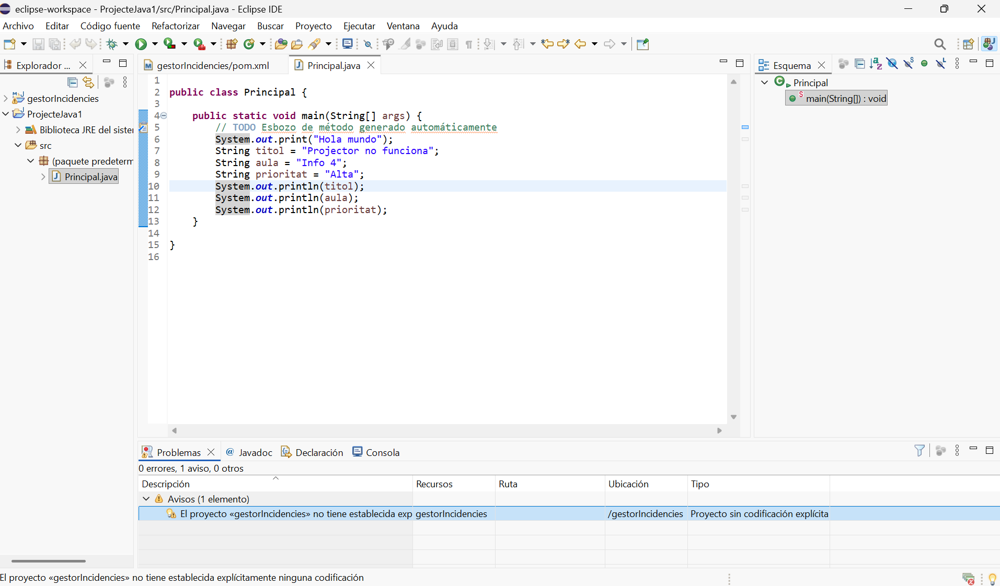
| Vista o element | Ús habitual | Per a què serveix? |
|---|---|---|
| Barra de menús | Habitual | Accedir a les funcions d'Eclipse, com crear projectes, executar programes o mostrar vistes. |
| Barra d'eines | Habitual | Accedir ràpidament a accions com desar, executar i depurar. |
| Explorador de paquets (Package Explorer) | Habitual | Explorar projectes, paquets, classes, fitxers i biblioteques. |
| Editor de codi | Constant | Escriure i modificar el codi font. |
| Consola (Console) | Habitual | Veure la sortida del programa i els missatges d'execució. |
| Problemes (Problems) | Habitual | Consultar errors i avisos detectats per l'entorn. |
| Esquema (Outline) | Complementari | Veure la llista de mètodes i altres elements del fitxer actual. |
| Javadoc i Declaració | Segons la necessitat | Consultar documentació i informació sobre elements del codi. |
| Vistes de depuració (Debug i Variables) | En depurar | Controlar l'execució i observar els valors de les variables quan el programa està aturat. |
| Lista de tareas (Task List) | No essencial al principi | Gestionar tasques i integracions de seguiment del treball. |
No cal memoritzar totes les vistes. Al principi, centra't en l'Explorador de paquets, l'editor, la Consola i Problemas. Les vistes es poden moure, tancar i recuperar.
Eines d'edició de programes
L'editor d'Eclipse no és només un lloc on escriure text. Proporciona funcions per entendre el codi, detectar problemes i fer canvis amb més seguretat.
Ressaltat de sintaxi
Utilitza colors per distingir paraules reservades, cadenes de text, comentaris i altres elements del codi.
Content Assist
Mostra suggeriments de codi mentre escrius. La drecera habitual és Ctrl + Espai.
Quick Fix
Proposa possibles solucions per a determinats errors. La drecera habitual és Ctrl + 1.
Format del codi
Aplica les regles de format configurades per mantenir la indentació i les línies consistents. Drecera habitual: Ctrl + Shift + F.
Organitzar imports
Ajuda a afegir o eliminar declaracions import innecessàries. Drecera habitual: Ctrl + Shift + O.
Refactorització bàsica
Permet fer canvis estructurals assistits, com canviar el nom d'una variable i actualitzar-ne les referències.
Personalitzar els colors del codi
Pots adaptar el ressaltat de sintaxi als teus gustos sense canviar el tema general de l'entorn:
- Obre Ventana → Preferencias (Window → Preferences).
- Ves a Java → Editor → Syntax Coloring (en algunes traduccions, «Coloreado de sintaxis»).
- Selecciona l'element que vols personalitzar, com ara paraules clau, cadenes de text, comentaris o nombres.
- Canvia el color i, quan estigui disponible, l'estil de la lletra.
- Prem Aplicar y cerrar.
Content Assist: suggeriments mentre escrius
Escriu una part d'un nom al codi i prem Ctrl + Espai. Eclipse mostra propostes de classes, mètodes i altres elements disponibles. Selecciona una proposta per consultar-ne la informació i completar el codi.
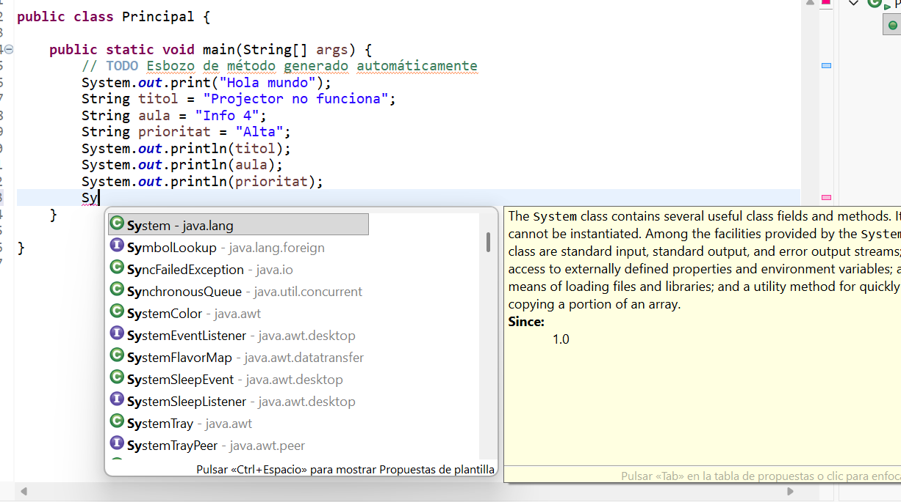
Sy, Eclipse proposa elements com System i mostra informació sobre l'element seleccionat.Quick Fix: possibles solucions a un problema
Quan Eclipse detecta un problema, situa el cursor a la línia marcada i prem Ctrl + 1. Si hi ha solucions disponibles, apareix una llista d'accions que poden corregir el problema o ajudar-te a continuar.
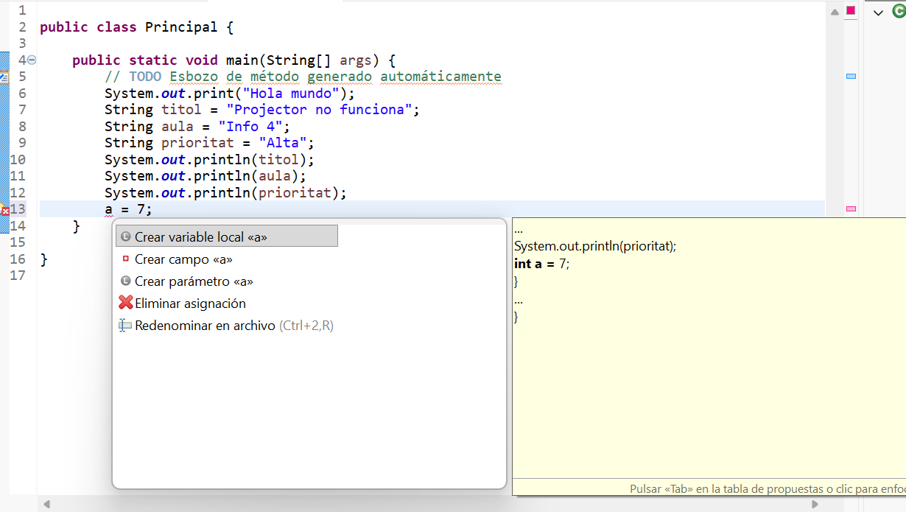
a no s'ha declarat abans de l'assignació a = 7;, Eclipse proposa accions com crear una variable local o un camp.Content Assist i Quick Fix són ajudes, no substitueixen la comprensió del codi. Llegeix les propostes i comprova què canviarà abans d'acceptar-les.
Eclipse pot marcar errors mentre edites el codi. Això no garanteix que detecti tots els errors: els problemes de lògica poden aparèixer només quan s'executa el programa.
Exemple: canvi de nom segur
Si una variable s'anomena titolIncidencia i vols canviar-ne el nom, utilitza l'opció de refactorització de canvi de nom en lloc de substituir el text manualment. L'IDE pot actualitzar les referències que corresponen a aquella variable.
Depuració: breakpoints i variables
És examinar l'execució d'un programa per comprendre què està passant i localitzar l'origen d'un error.
Què és un breakpoint?
Un breakpoint o punt d'interrupció és una marca que col·loquem en una línia de codi. Quan el programa s'executa en mode depuració i arriba a aquella línia, l'execució s'atura perquè puguem inspeccionar l'estat del programa.
Exemple: seguim una variable
Observa aquest fragment simplificat. El depurador ens permet aturar-nos abans de mostrar el títol i comprovar quin valor té la variable.
1 String titol = "Projector no funciona";
2 String aula = "Info 4";
3 String prioritat = "Alta";
4 System.out.println(titol);
5 System.out.println(aula);
6 System.out.println(prioritat);Si el programa està aturat a la línia 4, a la vista Variables podràs veure els valors actuals de titol, aula i prioritat si aquestes variables estan dins de l'àmbit visible en aquell punt.
| Ordre | Què fa? | Quan la utilitzem? |
|---|---|---|
| Resume · habitualment F8 | Continua l'execució fins al següent breakpoint o fins al final. | Quan ja hem acabat d'inspeccionar aquell punt. |
| Step Over · habitualment F6 | Executa la línia actual i passa a la següent sense entrar dins del mètode cridat. | Per avançar línia a línia. |
| Step Into · habitualment F5 | Entra dins del mètode cridat, si és possible. | Quan volem inspeccionar què fa un mètode. |
| Step Return · habitualment F7 | Continua fins que el mètode actual retorna. | Quan volem sortir del mètode que estem inspeccionant. |
| Terminate | Finalitza la sessió de depuració. | Quan volem aturar completament l'execució. |
Practica el seguiment de variables
Avança per les instruccions i observa com canvien els valors.
String titol = "Projector no funciona";titolSense assignarPreferències, plugins i extensions
Podem adaptar Eclipse a la nostra manera de treballar i afegir-hi eines quan necessitem funcions que no formen part de la instal·lació inicial.
Preferències
Permeten ajustar temes, mida de lletra, colors, format del codi, versions de Java i altres comportaments de l'entorn.
Plugins
Són components que amplien Eclipse amb noves funcions o integracions. S'han de triar segons una necessitat concreta.
Instal·lar un plugin
- Obre Help → Eclipse Marketplace.
- Cerca una eina relacionada amb la necessitat que vols resoldre.
- Llegeix-ne la descripció, la compatibilitat i l'autor.
- Selecciona la instal·lació i revisa els components que s'afegiran.
- Accepta els termes quan correspongui i reinicia Eclipse si t'ho demana.
- Comprova que la funció nova apareix i funciona.
Hi ha plugins i eines de l'ecosistema Eclipse que faciliten la connexió a bases de dades, l'exploració de taules i l'execució de consultes SQL. La disponibilitat concreta depèn de la versió d'Eclipse i dels connectors instal·lats. Una eina com DBeaver, en canvi, és una aplicació independent, no un plugin d'Eclipse.
Actualitzacions
Les actualitzacions poden corregir errors, millorar la seguretat o afegir compatibilitat. Utilitza les opcions d'actualització d'Eclipse i segueix les indicacions del professorat, especialment en equips de centre amb una configuració controlada.
Exportació, executables i automatització
Durant el desenvolupament, Eclipse compila el codi Java i permet executar-lo des de l'entorn. També podem exportar una aplicació perquè es pugui executar fora de l'IDE.
Exportar i lliurar un projecte en ZIP
Per lliurar una pràctica perquè el professorat en pugui revisar el codi i importar-la a Eclipse, no utilitzarem un JAR executable. Exportarem el projecte complet en un arxiu ZIP.
Exportació des d'Eclipse
- Fes clic amb el botó dret sobre el projecte al Package Explorer o Project Explorer.
- Selecciona Export… → General → Archive File.
- Selecciona els fitxers del projecte que cal lliurar i tria el format ZIP.
- Indica el nom i la ubicació del fitxer, i prem Finish.
- Lliura el ZIP a través de Moodle amb el nom indicat per a la pràctica.
Inclou el codi font i els fitxers de configuració necessaris. Els fitxers compilats de bin normalment no cal lliurar-los, perquè es poden generar de nou. En un projecte Maven, inclou pom.xml i les carpetes de codi font i recursos.
Importació per part del professorat
- Selecciona File → Import… → General → Existing Projects into Workspace.
- Marca Select archive file i selecciona el ZIP lliurat.
- Selecciona el projecte detectat i prem Finish.
- Comprova que el projecte es pot obrir, compilar i executar.
Què és un JAR?
Un fitxer .jar és un arxiu que empaqueta classes Java i, si cal, altres recursos i metadades. Un Runnable JAR inclou la informació necessària per indicar quin punt d'entrada s'ha d'executar.
Exportar un Runnable JAR des d'Eclipse
- Executa el projecte per comprovar que funciona.
- Obre File → Export.
- Selecciona Java → Runnable JAR file, si l'opció està disponible.
- Tria la configuració d'execució corresponent a la classe principal.
- Selecciona la ubicació i el nom del fitxer de sortida.
- Tria com s'han de gestionar les biblioteques necessàries segons les opcions disponibles.
- Finalitza l'exportació i comprova que s'ha creat el fitxer.
Per provar-lo des del terminal, situa't a la carpeta on s'ha exportat i executa:
java -jar GestorIncidencies.jarL'ordinador on s'executa el JAR necessita una versió compatible del runtime Java. A més, com que el nostre programa utilitza la consola per llegir dades, s'ha d'executar des d'un terminal i no simplement fent doble clic al fitxer.
Eines i automatització
Automatització integrada
Eclipse pot compilar automàticament quan es desa el codi, mostrar errors i avisos, organitzar imports i aplicar regles de format.
Eines de construcció
Eines com Maven o Gradle poden automatitzar la gestió de dependències, la compilació i l'empaquetament. Les estudiarem quan el projecte necessiti aquest nivell de configuració.